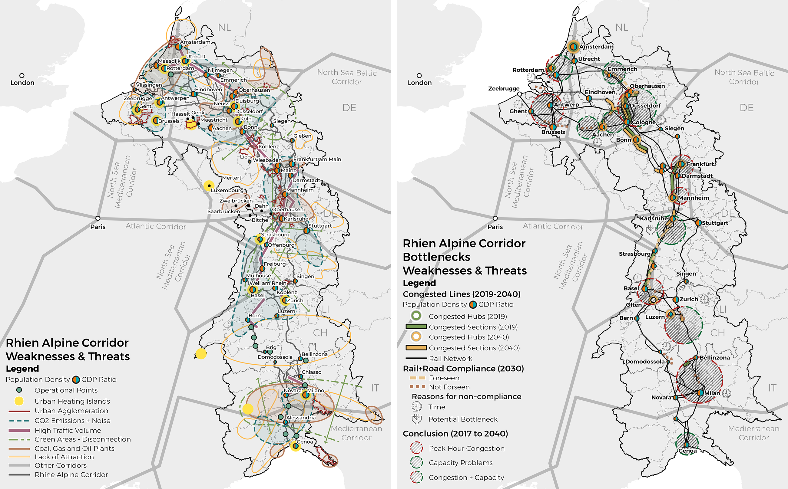

Urban Axis, Cologne/DE
Thesis, M.Sc.
The project focuses on the Poll district, where Siegburger Straße, part of the Porz Axis, divides the urban landscape. The area is characterized by a mix of architectural typologies and land uses but suffers from fragmentation and environmental challenges. Central to the design is the revitalization of Poll Wochenmarkt, aiming to transform it into a vibrant communal hub.
SWOT Analysis

Analysis Conclusions / Aspirations

Theoretical Development

The conclusions describes a planning framework for the Porz Axis, systematically organized into six parts: Social/Infrastructure, Socio-Cultural, Environmental, Transportation/Infrastructure, Socio-Economic and Planning/Infrastructure. The categorization not only represents the findings from the SWOT analysis but also explains the complex urban dynamics. Through dissecting the urban landscape into these separate yet interrelated categories, the framework aspires to uncover many challenges and opportunities that constitute the planning area's foundation.
Vision (Porz Axis), Concept (Neighborhood) & Strategic Vision (Poll Wochenmarkt)

A methodical approach was used to develop the vision for the Porz Axis, informed by detailed site analysis and planning theories such as Social Capital Theory, Inclusive City Concept, Placemaking, Biophilic Urbanism, and Sustainable Green Capital Concept. The vision aims to transform the Porz Axis into a cohesive urban landscape by integrating fragmented social nodes into a connected network. This includes enhancing accessibility, multifunctional use, and integrating green spaces through a proposed green belt.

Master Plan (Neighborhood)

Master Plan (Poll Wochenmarkt)

The Poll Marktplatz master plan integrates nine interconnected social nodes across inner and outer squares. At its core, the Community Center serves as a hub for communal engagement. The multifunctional Concert and Exhibition Center enriches cultural vibrancy and hosts markets. Integration and Job Centers nearby facilitate socioeconomic integration. A strategic tram station and pedestrian paths along the Porz Axis promote sustainable mobility. Green spaces throughout emphasize biophilic design principles, enhancing urban living. Family and Youth Centers in residential areas strengthen community bonds. An Entertainment Center and Education Center provide recreational and educational opportunities, while a central recreational area offers leisure activities.

⦿ Click for the complete thesis! ⦿
Rhine-Alpine Reimagined, Trans-European Transport Network
Integrated Project III, M.Sc.
The project aims to create a vision for a better connected Rhine-Alpine Corridor from the Netherlands to Italy, imagining the region as a fully integrated artery in Europe. It strategically focuses on social, economic and cultural nodes, considering the significance of borders. Starting at the mega-region scale, the project develops thematic systems within a cohesive structure, culminating in detailed focal points.
The Rhine-Alpine Corridor connects five European countries and Switzerland, featuring key transport hubs like ports, airports and rail terminals. Under the TEN-T policy, the project aims to improve freight and passenger transport, regional cohesion and network efficiency.
Strengths & Opportunities
The Rhine-Alpine Corridor's strategic location connects major transportation routes, enhancing its economic potential and providing easy market access. Developed industrial areas, proximity to major ports, a skilled workforce and robust infrastructure support growth. The high entrepreneurial density and specification diversity foster innovation. Opportunities include developing new terminals, boosting infrastructure investment, creating multi-modal logistic platforms and leveraging proximity to universities for research collaborations.
Weaknesses & Threats
The corridor faces significant challenges like low capacity at key nodes, congestion, and inefficient intermodal connectivity. These issues cause delays, non-competitive prices and infrastructure bottlenecks. Addressing these challenges requires infrastructure upgrades, developing an integrated intermodal network and digitizing the transport system to improve efficiency. Prioritizing investments and fostering cooperation among stakeholders is crucial for the corridor's long-term development and resilience.
Strategies
The Rhine-Alpine Corridor's strategic plan focuses on five key blocks: energy, ecology, transport, social, and economy. These strategies aim to address the complex interdependencies of sustainable development.
1. Sustainable Energy and Resource Management: Prioritize renewable energy and reduce carbon emissions to foster job creation and economic growth.
2. Biodiversity Conservation and Ecosystem Restoration: Preserve natural habitats, improve air and water quality, and reduce flood risks, while enhancing public health and promoting ecotourism.
3. Integrated and Sustainable Transport Systems: Promote sustainable transport options like cycling and public transport to reduce emissions and improve accessibility, thereby benefiting social and economic sectors.
4. Inclusive Communities and Social Equity: Ensure equitable distribution of sustainable development benefits by providing diverse housing options and fostering vibrant, inclusive communities.
5. Circular Economy and Inclusive Growth: Build on the success of the other blocks to attract innovative industries and support small businesses, enhancing the region’s economic resilience.
This integrated approach ensures that each block supports and strengthens the others, leading to a sustainable and resilient future for the Rhine-Alpine Corridor.
The Maastricht-Genk-Hasselt focal point is targeted for development in the Rhine-Alpine Corridor due to its strategic importance and existing transportation issues. Unlike other action areas with plans in place, this region lacks projections, making it crucial to address the root causes of congestion and capacity problems. The area presents a mix of densely populated urban areas and industrial zones, highlighting the need for strategic intervention. The development plan is divided into two zones: the first, from Maastricht to Genk and Hasselt, focuses on transportation developments, including a logistics center in Zutendaal; the second, from Maastricht to Tongeren, emphasizes industrial development and energy production, particularly smart agriculture. The plan also includes preserving green spaces and improving the road network to accommodate future growth, aiming for better integration and connectivity within the Rhine-Alpine Corridor.
Action Area Development Plan


⦿ Click for the project report! ⦿
Amstel-Stadt, Amsterdam/NL
Integrated Project II, M.Sc.
The project site is located in the central district of Amsterdam. It is in a relatively densely populated industrial zone where employees create the main traffic. However, the emerging need for residential use due to the increasing city population has led to structural changes, such as the introduction of public spaces and mixed-use concepts.
Disposition & Network

The area is within the borders of Ouder Amstel Municipality and is located between Amstel Business Park and De Nieuwe Kern. While the northern part of the area is mostly covered with businesses such as car services and dealerships, the southern part consists of fully abandoned green spaces. The land is a 5-minute walk from its center and it is possible to cross the entire Amstel-Stadt in approximately 5 minutes by bicycle. The site also has a strong connection to public transport for easy access to the city center.
Structural Vision

In the structural vision, the first priority was to address the non-functional intersections and lack of public space. The intersections along the primary road network were designated for recreational areas. From North to South, the project site was structured into industrial, industrial and business mixed-use, offices and residential mixed-use and residential zones. Additionally, neighboring parcels were planned for use as retail, energy, and recycling centers. The main goal was to encourage porosity, adaptation and visual connection within the scope of the Eco-Industrial Business Park concept.

Existing Building Renovations
The project outlines the three pillars of sustainability: Social (viable), Environment (equitable), and Economic (bearable). It emphasizes that successful urban sustainability relies on five key factors: availability of sustainable options, accessibility both physically and legally, attractiveness compared to unsustainable alternatives, affordability and public awareness. Characteristics of sustainable urban areas include public transportation, green buildings, water conservation, walkability and bikeability, food production, public green spaces, energy stations, energy production and waste management. These components work together to create a sustainable, equitable and resilient urban environment, ensuring that sustainable options are more appealing and accessible than their unsustainable counterparts.
Master Plan/h2>

In the master plan, the first decision was to connect the separated Southern and Northern parts with a green path. This allowed for more open space and reduced building density. To achieve this goal, several old buildings in the North were removed, and a grey road intersection in the South was moved underground, creating a recreational area above. The Southern network connections were left open for future developments. The functions follow a gradient pattern from North to South, transitioning from industrial to residential, with businesses, offices, and mixed-use areas in between. In terms of building forms, modular new structures were added to those with healthy structures. The new buildings are mostly shaped around the green path and network, featuring courtyards.